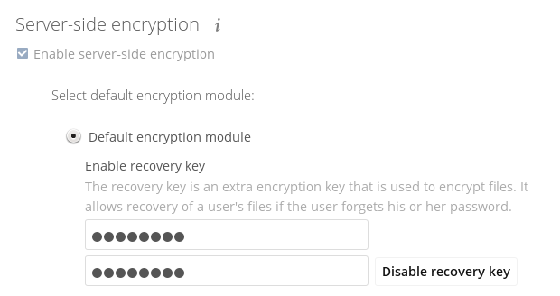
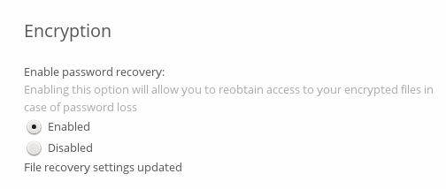
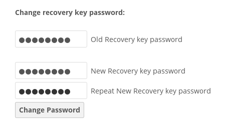

Encryption Configuration¶
The primary purpose of the ownCloud server-side encryption is to protect users’ files when they’re located on remote storages, such as Dropbox and Google Drive, and to do it smoothly and seamlessly from within ownCloud.
From ownCloud 9.0, server-side encryption for local and remote storages can operate independently of each other. By doing so, you can encrypt a remote storage without also having to encrypt your home storage on your ownCloud server.
Note
Starting with ownCloud 9.0 we support Authenticated Encryption for all newly encrypted files. See https://hackerone.com/reports/108082 for more technical information about the impact.
For maximum security make sure to configure external storage with “Check for changes: Never.” This will let ownCloud ignore new files not added via ownCloud. By doing so, a malicious external storage administrator cannot add new files to the storage without your knowledge. However, this is not wise if your external storage is subject to legitimate external changes.
ownCloud’s server-side encryption encrypts files stored on the ownCloud server and files on remote storages that are connected to your ownCloud server. Encryption and decryption are performed on the ownCloud server. All files sent to remote storage will be encrypted by the ownCloud server and decrypted before serving them to you or anyone whom you have shared them with.
Note
Encrypting files increases their size by roughly 35%. Remember to take this into account when you are both provisioning storage and setting storage quotas. Secondly, user quotas are based on the unencrypted file size — not the encrypted size.
When files on an external storage are encrypted in ownCloud, you cannot share them directly from the external storage services, only through ownCloud sharing. This is because the key to decrypt the data never leaves the ownCloud server.
ownCloud’s server-side encryption generates a strong encryption key, which is unlocked by users’ passwords. As a result, your users don’t need to track an extra password. All they need to do is log in as they normally would. ownCloud, transparently, encrypts only the contents of files, and not filenames and directory structures.
Important
You should regularly backup all encryption keys to prevent permanent data loss.
The encryption keys are stored in the following directories:
| Directory | Description |
|---|---|
data/<user>/files_encryption |
Users’ private keys and all other keys necessary to decrypt the users’ files. |
data/files_encryption |
Private keys and all other keys necessary to decrypt the files stored on a system wide external storage. |
Note
You can move the keys to a different location. To do so, refer to the Move Key Location section of the documentation.
When encryption is enabled, all files are encrypted and decrypted by the ownCloud application, and stored encrypted on your remote storage. This protects your data on externally hosted storage. The ownCloud admin and the storage admin will see only encrypted files when browsing backend storage.
Warning
Encryption keys are stored only on the ownCloud server, eliminating exposure of your data to third-party storage providers. The encryption application does not protect your data if your ownCloud server is compromised, and it does not prevent ownCloud administrators from reading users’ files. This would require client-side encryption, which this application does not provide. If your ownCloud server is not connected to any external storage services, it is better to use other encryption tools, such as file-level or whole-disk encryption.
Important
SSL terminates at or before Apache on the ownCloud server. Consequently, all files are in an unencrypted state between the SSL connection termination and the ownCloud code that encrypts and decrypts them. This is, potentially, exploitable by anyone with administrator access to your server. For more information, read: How ownCloud uses encryption to protect your data.
Encryption Types¶
ownCloud provides two encryption types:
- Basic encryption: every user has their own private/public key pairs, and the private key is protected by the user’s password.
- Master Key: there is only one key (or key pair) and all files are encrypted using that key pair.
Warning
These encryption types are not compatible.
Before Enabling Encryption¶
Plan very carefully before enabling encryption, because it is not reversible via the ownCloud Web interface. If you lose your encryption keys, your files are not recoverable. Always have backups of your encryption keys stored in a safe location, and consider enabling all recovery options.
You have more options via the occ command (see Enabling Master Key Based Encryption)
Warning
You can’t manage encryption without access to the command line. If your ownCloud installation is on a hosted environment and you don’t have access to the command line, you won’t be able to run occ commands. In this case, don’t enable encryption!
How To Enable Encryption¶
The base encryption system is enabled and disabled on your Admin page. First, you must enable this, and then select an encryption module to load. Go to the Server-side encryption section of your Admin page and check Enable encryption.
After clicking Enable encryption, you will see the message “No encryption module loaded, please load an encryption module in the app menu”. Currently, the only available encryption module is the ownCloud Default Encryption module. So, go to your Apps page to enable the ownCloud Default Encryption module.
Then, return to your Admin page to see that the ownCloud Default Encryption module has been added to the module selector and automatically selected. Now you must log out and then log back in to initialize your encryption keys.
When you log back in, a checkbox for enabling encryption on your home storage, will now be available — checked by default. Uncheck it to avoid encrypting your home storage.
Enabling Encryption From the Command-line¶
To enable encryption via the command-line, involves two commands. These are:
# Enables the default encryption module app
php occ app:enable encryption
# Enables encryption
php occ encryption:enable
Note
Please note, the commands have to be run in this order.
Warning
If you already have Basic encryption enabled - you must not enable Master Key Based encryption.
Enabling Master Key Based Encryption¶
To enable master key based encryption:
- Enable the default encryption module app, using the following command
php occ app:enable encryption
- Then enable encryption, using the following command
php occ encryption:enable
- Then enable the master key, using the following command
php occ encryption:select-encryption-type masterkey
Note
The master key mode has to be set up in a newly created instance.
- Encrypt all data
php occ encryption:encrypt-all
Note
This is not typically required, as the master key is often enabled at install time. As a result, when enabling it, there should be no data to encrypt. But, in case it’s being enabled after install, and the installation does have files which are unencrypted, encrypt-all can be used to encrypt them.
Sharing Encrypted Files¶
After encryption is enabled, your users must also log out and log back in to generate their personal encryption keys. They will see a yellow warning banner that says “Encryption App is enabled, but your keys are not initialized. Please log-out and log-in again.”
Also, share owners may need to re-share files after encryption is enabled. Users who are trying to access the share will see a message advising them to ask the share owner to re-share the file with them.
For individual shares, un-share and re-share the file. For group shares, share with any individuals who can’t access the share. This updates the encryption, and then the share owner can remove the individual shares.

Encrypting External Mountpoints¶
You and your users can encrypt individual external mount points. You must have external storage enabled on your Admin page, and enabled for your users. Encryption settings can be configured in the mount options for an external storage mount; see Mount Options (Configuring External Storage (GUI))
How To Enable Users File Recovery Keys¶
Once a user has encrypted their files, if they lose their ownCloud password, then they lose access to their encrypted files, as their files will be unrecoverable. It is not possible, when user files are encrypted, to reset a user’s password using the standard reset process.
If so, you’ll see a yellow banner warning:
Please provide an admin recovery password; otherwise, all user data will be lost.
To avoid all this, create a Recovery Key. To do so, go to the Encryption section of your Admin page and set a recovery key password.

You then need to ask your users to opt-in to the Recovery Key. For the users to do this, they need to go to the “Personal” page and enable the recovery key. This signals that they are OK that the admin might have a way to decrypt their data for recovery reasons. If they do not do this, then the Recovery Key won’t work for them.

For users who have enabled password recovery, give them a new password and recover access to their encrypted files, by supplying the Recovery Key on the Users page.

You may change your recovery key password.

Note
Sharing a recovery key with a user group is not supported. This is only supported with the master key.
Changing The Recovery Key Password¶
If you have misplaced your recovery key password and need to replace it, here’s what you need to do:
- Delete the recovery key from both
data/owncloud_private_keysanddata/public-keys - Edit your database table
oc_appconfigand remove the rows with the config keysrecoveryKeyIdandrecoveryAdminEnabledfor the appidfiles_encryption - Login as admin and activate the recovery key again with a new password. This will generate a new key pair
- All users who used the original recovery key will need to disable it and enable it again. This deletes the old recovery share keys from their files and encrypts their files with the new recovery key
Note
You can only change the recovery key password if you know the original. This is by design, as only admins who know the recovery key password should be able to change it. If not, admins could hijack the recovery key from each other
Warning
Replacing the recovery key will mean that all users will lose the possibility to recover their files until they have applied the new recovery key
Disabling Encryption¶
To disable encryption, put your ownCloud server into single-user mode, and then disable your encryption module with these commands:
occ maintenance:singleuser --on
occ encryption:disable
Take it out of single-user mode when you are finished, by using the following command:
occ maintenance:singleuser --off
Important
You may only disable encryption with by using the occ Encryption Commands. Make sure you have backups of all encryption keys, including those for all your users.
Not All Files Are Encrypted¶
Only the data in the files in data/user/files are encrypted, not the filenames or folder structures.
In addition, these files are never encrypted:
- Existing files in the trash bin & Versions. Only new and changed files after encryption is enabled are encrypted.
- Image thumbnails from the Gallery app
- Previews from the Files app
- The search index from the full-text search app
- Third-party app data
There may be other files that are not encrypted. Only files that are exposed to third-party storage providers are guaranteed to be encrypted.
LDAP and Other External User Back-ends¶
If you use an external user back-end, such as an LDAP or Samba server, and you change a user’s password on that back-end, the user will be prompted to change their ownCloud login to match on their next ownCloud login. The user will need both their old and new passwords to do this. If you have enabled the recovery key then you can change a user’s password in the ownCloud Users panel to match their back-end password and then — of course — notify the user and give them their new password.
occ Encryption Commands¶
If you have shell access, you may use the occ command to perform encryption operations.
You also have additional options such as decryption and creating a single master encryption key.
See Encryption for detailed instructions on using occ.
View Current Encryption Status¶
Get the current encryption status and the loaded encryption module:
occ encryption:status
- enabled: false
- defaultModule: OC_DEFAULT_MODULE
This is equivalent to checking Enable server-side encryption on your Admin page:
occ encryption:enable
Encryption enabled
Default module: OC_DEFAULT_MODULE
List Available Encryption Modules¶
To list the available encryption modules:
occ encryption:list-modules
- OC_DEFAULT_MODULE: Default encryption module [default*]
Select a different default Encryption module (currently the only available module is OC_DEFAULT_MODULE):
occ encryption:set-default-module [Module ID].
The [module ID] is taken from the encryption:list-modules command.
Encrypt and Decrypt Data Files For All Users¶
For performance reasons, when you enable encryption on an ownCloud server only new and changed files are encrypted. This command gives you the option to encrypt all files. You must first put your ownCloud server into single-user mode to prevent any user activity until encryption is completed:
occ maintenance:singleuser --on
Single user mode is currently enabled
Then run occ:
occ encryption:encrypt-all
You are about to start encrypting all files stored in your ownCloud.
It will depend on the encryption module you use which files get encrypted.
Depending on the number and size of your files this can take some time.
Please make sure that no users access their files during this process!
Do you really want to continue? (y/n)
When you type y it creates a key pair for each of your users, and then encrypts their files, displaying progress until all user files are encrypted.
Decrypt all user data files, or optionally a single user:
occ encryption:decrypt-all [username]
View current location of keys:
occ encryption:show-key-storage-root
Current key storage root: default storage location (data/)
Move Key Location¶
Move keys to a different root folder, either locally or on a different server.
The folder must already exist, be owned by root and your HTTP group, and be restricted to root and your HTTP group.
This example is for Ubuntu Linux.
Note that the new folder is relative to your occ directory:
mkdir /etc/keys
chown -R root:www-data /etc/keys
chmod -R 0770 /etc/keys
occ encryption:change-key-storage-root ../../../etc/keys
Start to move keys:
4 [============================]
Key storage root successfully changed to ../../../etc/keys
Create a New Master Key¶
Use this when you have:
- A single-sign-on infrastructure
- A fresh installation with no existing data
- Systems where encryption has not already been enabled
occ encryption:enable-master-key
Important
It is not possible to disable it.
Recreating an Existing Master Key¶
If the master key needs replacing, for example, because it has been compromised, an occ command is available. The command is encryption:recreate-master-key. It replaces existing master key with new one and encrypts the files with the new key.
Disabling Encryption¶
You may disable encryption only with occ.
Make sure you have backups of all the encryption keys, including those for all users.
When you do, put your ownCloud server into single-user mode, and then disable your encryption module with this command:
occ maintenance:singleuser --on
occ encryption:disable
Warning
Encryption cannot be disabled without the user’s password or file recovery key. If you don’t have access to at least one of these then there is no way to decrypt all files.
Then, take it out of single-user mode when you are finished with this command:
occ maintenance:singleuser --off
It is possible to disable encryption with the file recovery key, if every user uses them. If so, “decrypt all” will use it to decrypt all files.
Note
It is not planned to move this to the next user login or a background job. If that was done, then login passwords would need to be stored in the database, which could be a security issue.
Files Not Encrypted¶
Only the data in the files in data/user/files are encrypted, and not the filenames or folder structures. These files are never encrypted:
- Existing files in the trash bin & Versions. Only new and changed files after encryption is enabled are encrypted.
- Existing files in Versions
- Image thumbnails from the Gallery app
- Previews from the Files app
- The search index from the full-text search app
- Third-party app data
There may be other files that are not encrypted; only files that are exposed to third-party storage providers are guaranteed to be encrypted.
LDAP and Other External User Back-ends¶
If you use an external user back-end, such as an LDAP or Samba server, and you change a user’s password on the back-end, the user will be prompted to change their ownCloud login to match on their next ownCloud login. The user will need both their old and new passwords to do this. If you have enabled the Recovery Key, then you can change a user’s password in the ownCloud Users panel to match their back-end password, and then, of course, notify the user and give them their new password.
Encryption migration to ownCloud 8.0¶
When you upgrade from older versions of ownCloud to ownCloud 8.0, you must manually migrate your encryption keys with the occ command after the upgrade is complete, like this example for CentOS: sudo -u apache php occ encryption:migrate-keys
You must run occ as your HTTP user. See Using the occ Command to learn more about occ.
Encryption migration to ownCloud 8.1¶
The encryption backend has changed again in ownCloud 8.1, so you must take some additional steps to migrate encryption correctly. If you do not follow these steps you may not be able to access your files.
Before you start your upgrade, put your ownCloud server into maintenance:singleuser mode (See Maintenance Mode Configuration.)
You must do this to prevent users and sync clients from accessing files before you have completed your encryption migration.
After your upgrade is complete, follow the steps in How To Enable Encryption to enable the new encryption system.
Then click the Start Migration button on your Admin page to migrate your encryption keys, or use the occ command.
We strongly recommend using the occ command; the Start Migration button is for admins who do not have access to the console, for example, installations on shared hosting.
This example is for Debian/Ubuntu Linux:
$ sudo -u www-data php occ encryption:migrate
This example is for Red Hat/CentOS/Fedora Linux:
$ sudo -u apache php occ encryption:migrate
You must run occ as your HTTP user; see
Using the occ Command.
When you are finished, take your ownCloud server out of
maintenance:singleuser mode.